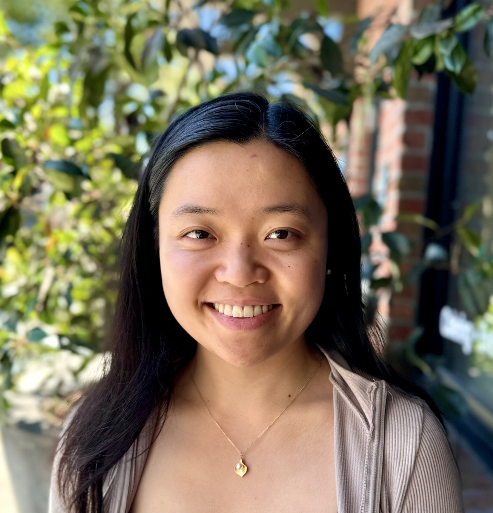

Hello, I’m Audrey!
I am a fifth-year PhD student in Computer Science at UC Berkeley in the Sky Computing Lab, advised by Ion Stoica and Natacha Crooks. My research focuses on transaction processing for database systems.
Previously, I graduated with a BSE in Operations Research and Financial Engineering from Princeton University, where I worked with Wyatt Lloyd and Kai Li. I interned on the Themis team at Facebook, focusing on consistency and isolation in large-scale systems. I’m supported by an NSF Graduate Research Fellowship, a Meta PhD Research Fellowship, and a Berkeley Chancellor’s Fellowship.
Latest News
Jun 2024
Transaction scheduling paper accepted into VLDB 2024 — pdf
Dec 2023
Mammoth transactions paper accepted into VLDB 2024 — pdf
Mar 2023
DeToX accepted into OSDI 2023 — pdf
Apr 2022
TAOBench accepted into VLDB 2022 — pdf
Aug 2021
RAMP-TAO awarded Best Industry Paper at VLDB 2021 — pdf
Publications
TAOBench: An End-to-End Benchmark for Social Network Workloads
VLDB 2022
RAMP-TAO: Layering Atomic Transactions on Facebook’s Online TAO Data Store
VLDB 2021 — Best Industry Paper Award
Talks
“Take Out the TraChe: Maximizing (Tra)nsactional Ca(che) Hit Rate”
- Sky Lab Winter 2023 Retreat (Monterey, CA): Jan. 2023.
- Distributed Systems Meeting (Berkeley, CA): Nov. 2022.
- Sky Lab Summer 2022 Retreat (Lake Tahoe, CA): Jun. 2022.
“TAOBench: An End-to-End Benchmark for Social Networking Workloads”
- Pinterest Infra Talks (Palo Alto, CA): Dec. 2022.
- HTAP Summit (Palo Alto, CA): Nov. 2022.
- PingCAP Meetup (Berkeley, CA and Online): Sep. 2022.
- Fifteenth TUC Meeting @ SIGMOD 2022 (Online): Jun. 2022.
- Berkeley Database Seminar (Berkeley, CA): Feb. 2022.
- Berkeley Progressive Systems Seminar (Online): Dec. 2021.
- Deep-Dive Talks @ Facebook (Online): Sep. 2021.
“RAMP-TAO: Layering Atomic Transactions on Facebook’s Online TAO Data Store”
- LinkedIn Big Data Platforms (Online): Mar 2022.
- Meta Core Data Tech Talks (Online): Feb 2022.
- RISELab Winter 2022 Retreat (Online): Jan 2022.
- Berkeley Databases Seminar (Online): May 2021.
- Berkeley Progressive Systems Seminar (Online): Apr. 2021.
“Gryff: Unifying Consensus and Shared Registers”
- DB Engineering @ Facebook (Online): Aug. 2020.
“Unifying Caching Objectives with Learning Relaxed Belady”
- Deep-Dive Talks @ Facebook (Online): Aug. 2020.
- Princeton Senior Thesis Oral Presentation (Online): May 2020.
Fellowships & Awards
- NSF Graduate Research Fellowship (2022)
- Meta PhD Research Fellowship (2022)
- Berkeley Chancellor's Fellowship (2020)
- Berkeley EECS Excellence Award (2020)
- Princeton Kenneth H. Condit '13 Prize (2020)
- Princeton Phi Beta Kappa, Sigma Xi, Tau Beta Pi (2019, 2020)
- Princeton George B. Wood Legacy Junior Prize (2019)
- Princeton Shapiro Prize for Academic Excellence (2017, 2018)
CV
Contact
You can reach me at accheng at berkeley dot edu. If you are a Berkeley undergrad interested in research, please contact me via email.